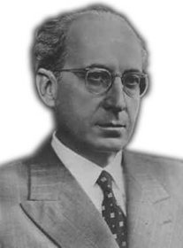
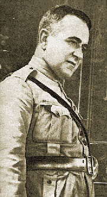
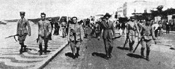

Edição Especial OAB
O início do funcionamento da OAB
Como determinava o Decreto nº 19.408 a Ordem seria regida pelos estatutos votados pelo Instituto dos Advogados Brasileiros e aprovados pelo governo. O presidente do Instituto, Levi Carneiro, nomeou então uma comissão para a elaboração de anteprojeto, formada por A. Moitinho Dória, presidente; Armando Vidal, relator; Edmundo de Miranda Jordão, Antônio Pereira Braga, Edgard Ribas Carneiro, Gabriel Bernardes e Gualter Ferreira. Coube ao próprio Levi Carneiro, desta vez como consultor-geral da República, emitir, em 15 de novembro de 1931, parecer sobre o projeto do primeiro Regulamento da Ordem dos Advogados, que foi aprovado pelo Decreto n.º 20.784, de 14 de dezembro de 1931. O art. 4.º do Regulamento previa a criação do Conselho Federal para o exercício das atribuições da Ordem em todo o território nacional.
Para Levi Carneiro, a Revolução de 1930 tinha dado à Ordem dos Advogados do Brasil um alto significado.
Em virtude das dificuldades encontradas para implantar a Ordem em todo o território nacional, o Decreto n.º 22.266, de 28 de dezembro de 1932, adiou para 31 de março de 1933 a execução do Regulamento, inicialmente prevista para 1º de maio de 1932. E o Decreto nº 22.478 de 20 de fevereiro de 1933, aprovou e mandou consolidar, com as modificações posteriores introduzidas pelos Decretos n.º 21.592, de 1º de julho de 1932 e n.º 22.039, de 1º de novembro de 1932, os dispositivos regulamentares da Ordem dos Advogados do Brasil.
O Conselho Federal da OAB funcionou primeiramente no prédio do Instituto dos Advogados Brasileiros. A primeira sessão preparatória foi realizada em 6 de março de 1933 e, em 9 de março, na segunda sessão preparatória, foi realizada a eleição da diretoria, sendo aclamados Levi Carneiro para a presidência e Attílio Vivácqua para a secretaria geral.Em sessão especial, nesse mesmo dia, houve a instalação solene do Conselho Federal, completando a aparelhagem da Ordem dos Advogados do Brasil. O Regimento Interno do Conselho, fixando sua organização administrativa, foi aprovado em 13 de março de 1933.
Na solenidade de instalação da primeira sessão ordinária do Conselho Federal, ocorrida em 11 de agosto de 1933, Levi Carneiro referiu-se à etapa vencida pela instituição em brilhante discurso.
E sob a condução de Levi Carneiro e Attílio Vivácqua - que foram sucessivamente reeleitos e permaneceram à frente do Conselho Federal por três mandatos consecutivos -, a Ordem dos Advogados foi consolidada. Suas ações concentraram-se, principalmente, nas tarefas de organização da instituição, como solução de problemas de interpretação do Estatuto, ordenamento das seções estaduais e elaboração do Código de Ética.
O primeiro Código de Ética Profissional para os advogados, aspiração já antiga da classe, foi aprovado na sessão do Conselho Federal de 25 de julho de 1934, dando cumprimento ao preceituado no art. 84, inciso III, do Regulamento da OAB, encerrando a discussão iniciada em 30 de maio de 1933.

Chegada de Getúlio ao Catete para tomar posse em 3 de novembro de 1930
A OAB e a Constituinte de 1934
"A preocupação do meio termo conduzirá a Assembléia a votar uma Constituinte inadaptável às realidades históricas, políticas e sociais do País. A seu critério, ela se apresenta ditatorial e haurida na autoridade daqueles dois poderes, ameaçando arrastar-nos a um sistema que seria fatalmente rompido em um golpe de Estado". Levi Carneiro, em 06/05/1934.

LEVI CARNEIRO
Primeiro presidente do Conselho Federal (1933-1938)
Comentário de LEVI CARNEIRO
(..) Enquadrou-a entre as reformas que devem remodelar a sociedade. E não terá errado. Porque a Ordem dos Advogados é uma das criações necessárias para a moralização da vida pública nacional, que todos sentimos urgente empreender. Ela será um dos vínculos poderosos em que se há de iniciar e firmar o sentimento da unidade nacional, em vez da centralização opressiva, sob a autoridade absorvente do Chefe da Nação, adequada antes a provocar o esfacelamento da República e os surtos do regionalismo estreito. Porque ela há de tornar, para uma grande elite de homens de cultura, capazes de benéfica influência na vida pública, uma escola de ação social e política, desinteressada e fecunda, e de prática da solidariedade associativa. Porque, enfim, ela poderá ser um fator de elevação da nossa cultura jurídica.

ATTÍLIO VIVÁCQUA
(1952-1954)
ATTÍLIO VIVÁCQUA
(1952-1954)

Getúlio Vargas a caminho do Rio para tomar posse na chefia do Governo
Getúlio Vargas a caminho do Rio para tomar posse na chefia do Governo
A dissolução do Congresso e os movimentos oposicionistas
O Governo Provisório conseguiu concentrar amplos poderes. Logo após sua instalação, Getúlio Vargas baixaria um decreto, com a assinatura de seus novos ministros, dando ao governo o direito legal de exercer, além do Poder Executivo, a autoridade legislativa. Esse arranjo duraria, segundo o texto, até que uma Assembléia Constituinte eleita processasse a reorganização constitucional do País. Com o fechamento do Congresso Nacional e das Câmaras Municipais, foi criado o cargo de interventor federal nos Estados.
Essa concentração de poderes fez emergir disputas pelo poder entre os variados setores que compunham a coalizão revolucionária. Nos meses que se seguiram à Revolução de 1930, cresceu entre os constitucionalistas liberais o anseio por uma representatividade autêntica. Isso implicava o cumprimento das promessas de Vargas de convocar uma Assembléia Constituinte. Para acalmar os grupos que exigiam o regresso ao regime constitucional é publicado, a 24 de fevereiro de 1932, o novo Código Eleitoral, que se configurava numa das principais exigências para a efetivação da nova Carta.
A publicação do novo código foi seguida de um decreto que fixava o dia 3 de março de 1933 para a eleição da Assembléia Constituinte. Embora sem resultados práticos, o grupo tenentista reagiu com manifestações de violenta rejeição às medidas de reconstitucionalização.

A MARCHA DA MORTE - OS 18 DO FORTE
(arquivo da FGV/CPDOC)
A MARCHA DA MORTE - OS 18 DO FORTE
(arquivo da FGV/CPDOC)
Entretanto, crescia o movimento de oposição ao regime que se prolongava. Em 9 de julho de 1932, São Paulo levantou-se em revolta armada, conhecida como a "Revolução Constitucionalista". Após dois meses de sítio ao Estado, os revoltosos renderam-se às forças federais.
Comunicação Social - Jornalismo
Legislação e Ética no Jornalismo: Denis Policani
Alunas: Ayla Ueda, Bruna Presmic, Fernanda Ferraz, Karina Martin e Mariana Thomaz